FBAUL
Faculty Projects
2024-
Some of my favorite projects from the past two years in Communication Design at the Faculty of Fine Arts in Lisbon.

Segredo
“SEGREDO” is a typographic project developed using analog film. The concept explores secrecy and revelation, using the delayed nature of film development as a metaphor for hidden meaning and gradual discovery.
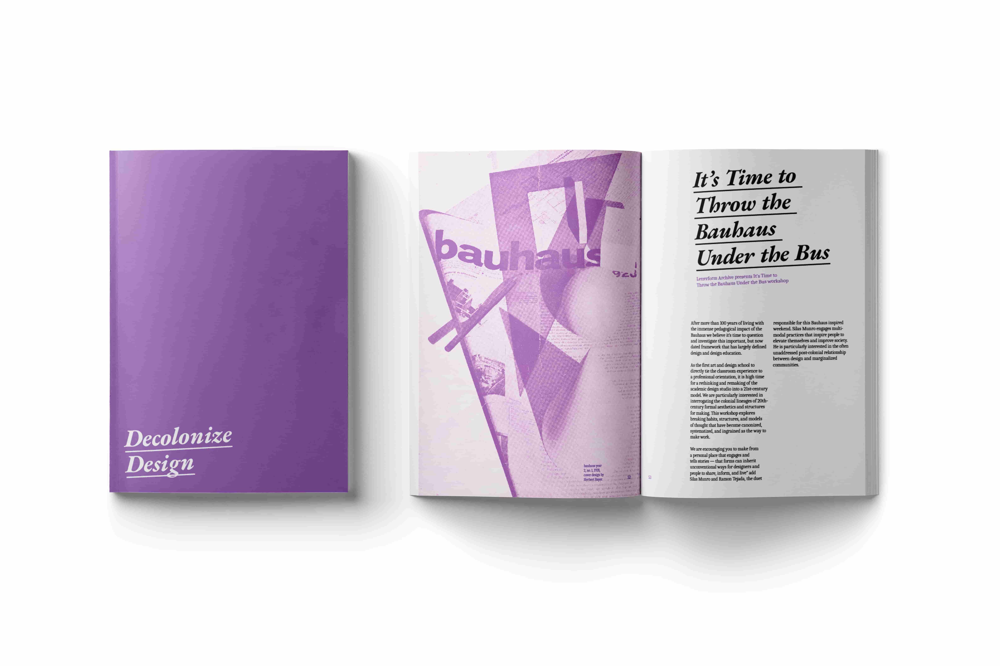
Decolonize Design
Collection of texts focused on education and Black history. The editorial design targets a BIPOC audience while also addressing the broader educational system. The layout is clean and structured, with purple used as a symbolic color, and slightly distorted titles adding a playful visual dynamic.
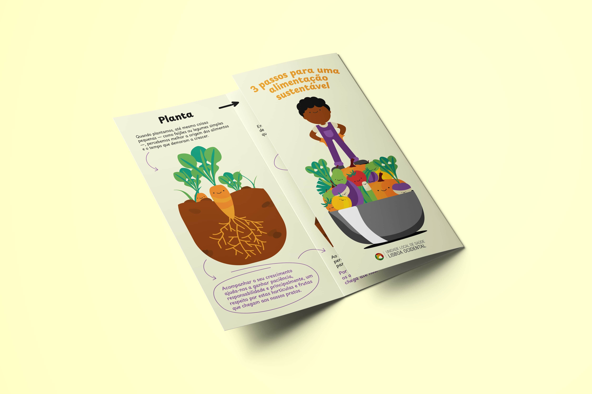
3 passos para uma alimentação mais sustentável
Academic flyer focused on healthy eating and sustainability. Designed for a younger audience, the project uses friendly vector elements and concise text to maintain engagement and accessibility.

Graphic standards manual
Graphic standards manual for “Inclusive World Intervention” (IWI). The project explores the intersection between technology and nature, particularly inspired by indigenous culture. The visual identity combines pixelated elements with organic forms, creating a balance between natural and digital aesthetics.
Erasmus+
Erasmus mobility
(2022-2024)
Projects created during the Erasmus+ mobility in Belgium (2022). Exploring the relationship between philosophy and art through collaborative zines and visual experimentation.
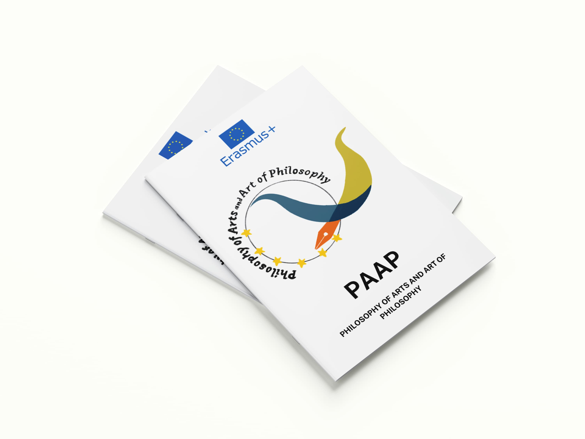
Philosophy of Arts and Arts of Philosophy
Design and layout for collaborative zine between all the countries in the program. I also created digital drawings for this project
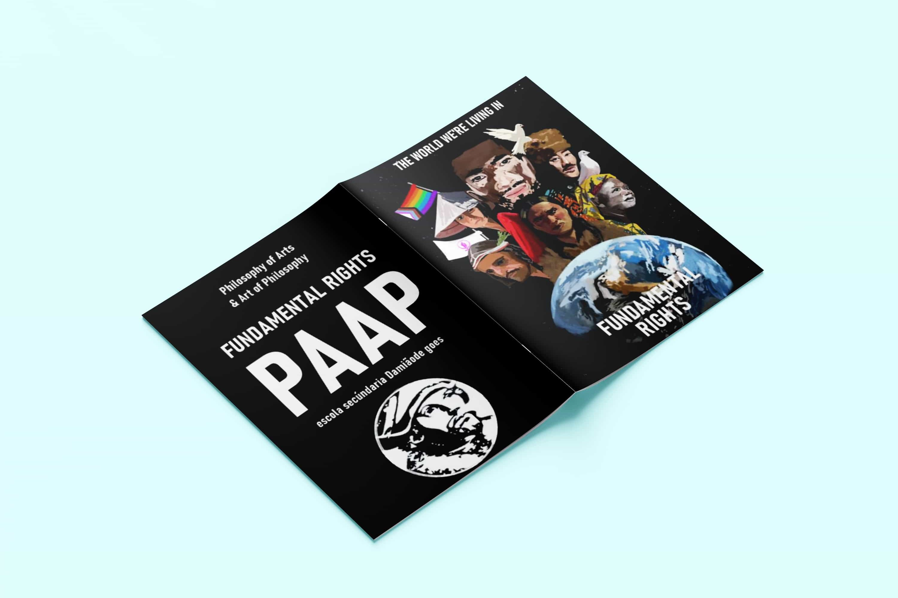
Fundamental Rights zine
Mini zine for the project, given to student from the other countries on the Belgium’s Erasmus+ mobility
Young European Ambassador
EU initiative
(2023-2024)
The European Parliament Ambassador School Programme (EPAS) is an educational initiative designed to increase students' awareness of European parliamentary democracy, the role of the European Parliament, and European values.
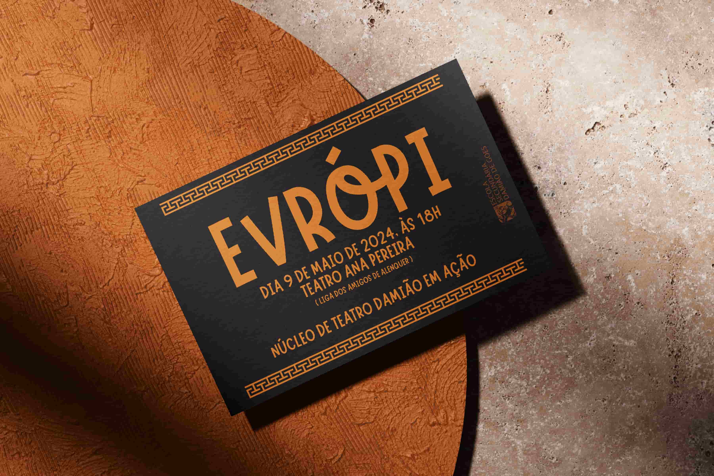
Evrópi
Invitation card for a play called “Evrópi”. For these cards I wanted something simple but with a touch of greek art and patterns
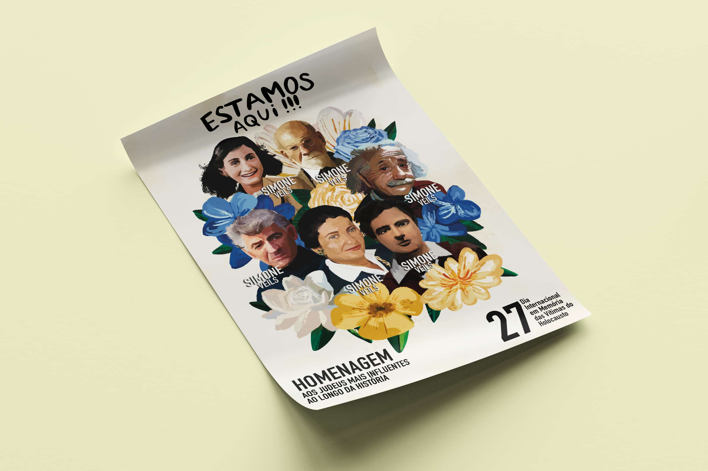
International Day of Commemoration in memory of the victims of the Holocaust
For this project I had to create a poster for an exhibition about the International Day of Commemoration in memory of the victims of the Holocaust and decided to combine some of the most influential jews in history and tell a bit of their story
PNA
Volunteer work
(2022-2024)
During secondary school, I volunteered as a designer for a project called PNA, integrated in my school, aiming to bring culture and the arts to the service of society and education.
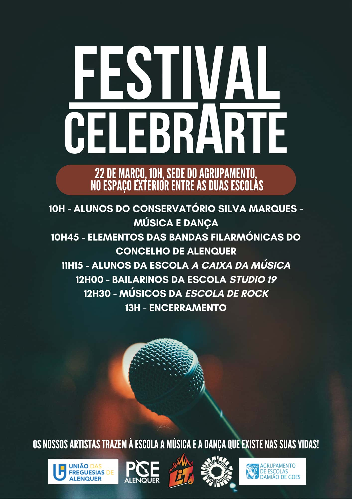


Lit
Student's Union ESDG
(2023-2024)
I designed all the social media posts and stories for the Lit account, and worked on the rebranding for the student's union logo.
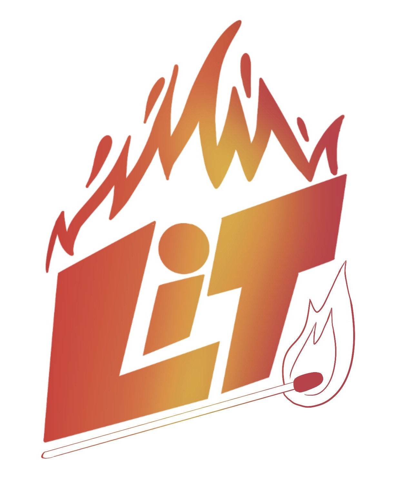
Lit's logo
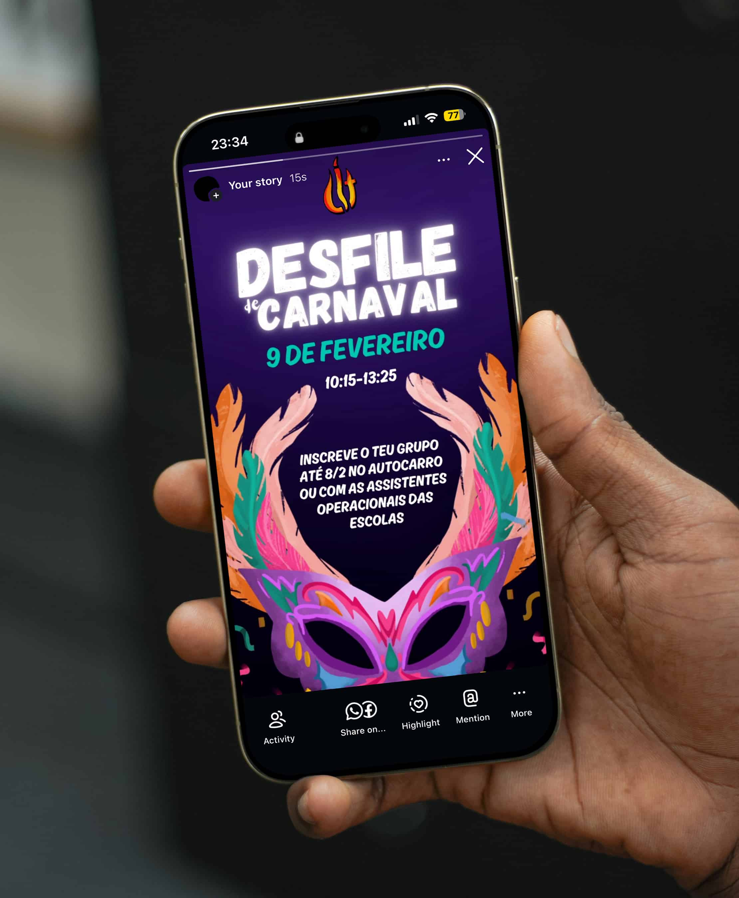
Desfile de Carnaval
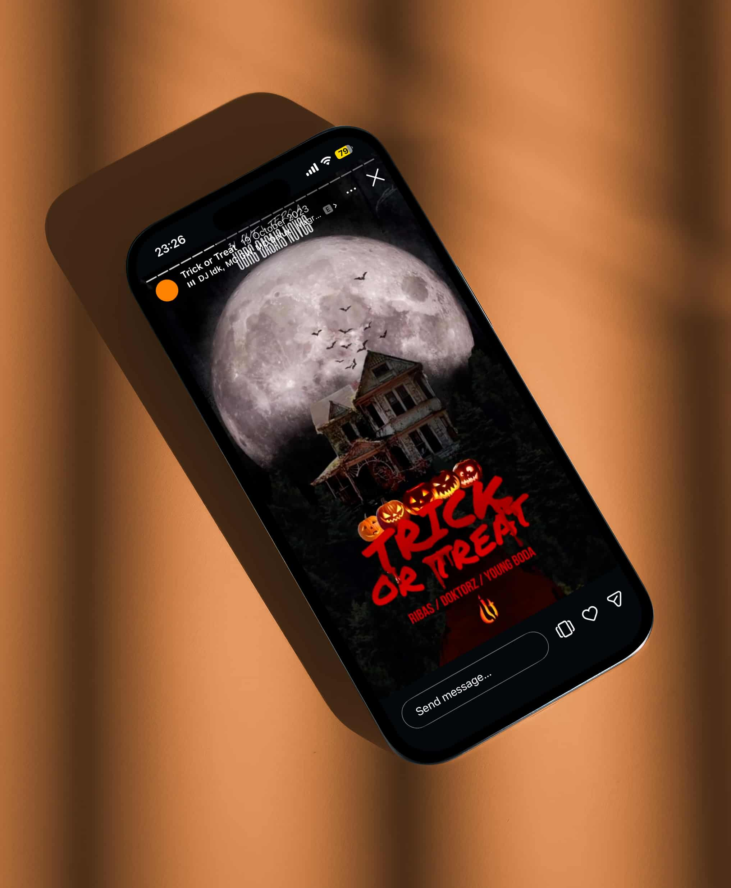
Trick or Treat
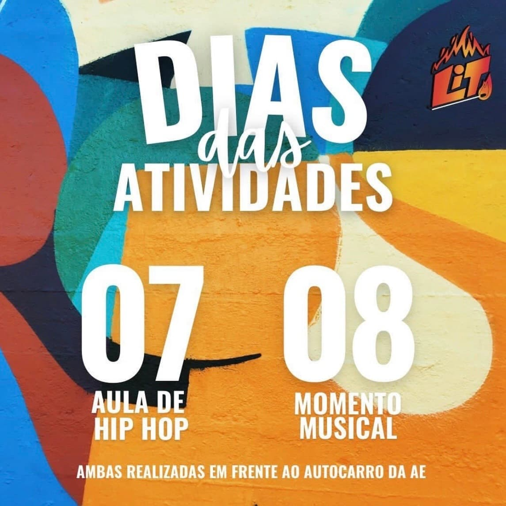
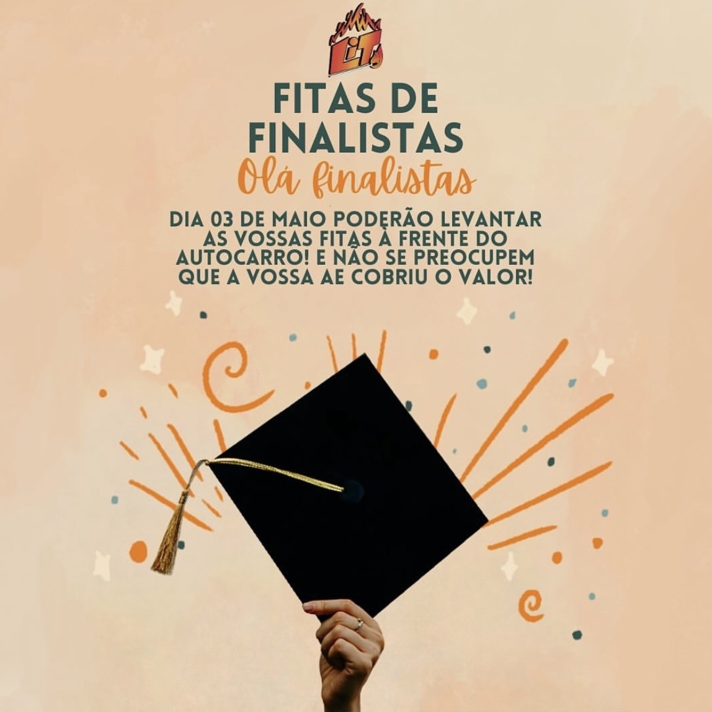